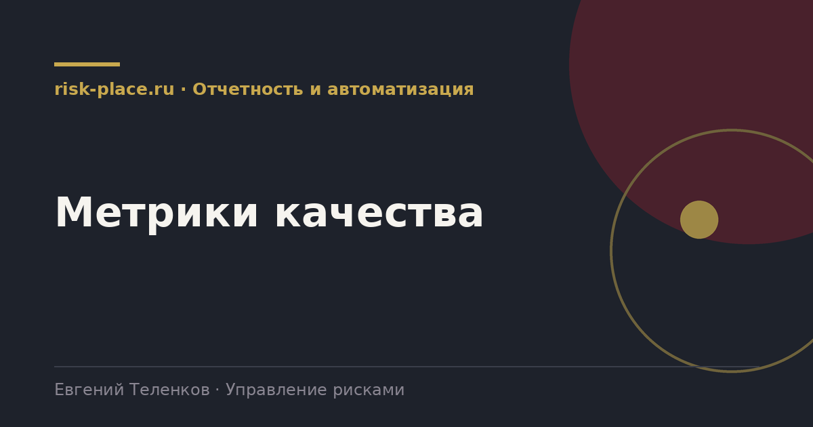

Главная · Библиотека · Отчетность и автоматизация · Метрики качества
Библиотека · Отчетность и автоматизация
Индикаторы измеряют риски. Метрики качества измеряют, хорошо ли компания с ними работает.

Показывают, выполняется ли работа.
| Метрика | Как считается | Ориентир |
|---|---|---|
| Актуальность реестра | Доля рисков с оценкой не старше квартала | Не ниже 90 процентов |
| Дисциплина исполнения | Доля мероприятий, выполненных в срок | Не ниже 85 процентов |
| Охват владельцами | Доля рисков с назначенным владельцем уровня директора | 100 процентов для существенных |
| Полнота индикаторов | Доля существенных рисков с работающим индикатором | Не ниже 70 процентов |
| Регулярность комитета | Доля состоявшихся заседаний от запланированных | Не ниже 90 процентов |
| Скорость реакции | Среднее время от срабатывания порога до принятия решения | Не более 10 рабочих дней |
Показывают, приносит ли работа пользу. Считать труднее, ценность выше.
| Метрика | Смысл |
|---|---|
| Доля реализовавшихся событий, присутствовавших в реестре | Качество прогноза. Событие, которого в реестре не было, это провал идентификации |
| Отклонение фактических потерь от оценки | Качество оценки. Систематическое занижение указывает на оптимизм |
| Снижение уровня по управляемым рискам | Эффект мероприятий, разница между остаточным уровнем начала и конца года |
| Доля существенных решений с оценкой риска | Интеграция функции в управление |
| Число предотвращенных событий | Считается по срабатыванию индикаторов с последующим действием и отсутствием события |
Метрики процесса нужны функции для внутреннего управления и для разговора с подразделениями. Метрики результата нужны для разговора с руководством и советом директоров о ценности функции.
Самая сильная из них это доля реализовавшихся событий, присутствовавших в реестре. Она считается просто, берутся все существенные инциденты года и проверяется, был ли соответствующий риск в реестре и что говорила его оценка. Результат обычно отрезвляющий и всегда содержательный. Если из десяти событий года в реестре было три, вопрос стоит не о совершенствовании методологии оценки, а о полноте идентификации.
Показатели, создающие неверные стимулы.
Частые вопросы
Одна форма для любого вопроса
Расскажем о ближайших датах, предложим формат под ваш состав участников и назовем порядок бюджета.
Предпочитаете почту — напишите на info@risk-place.ru. Адрес: Москва, улица Скаковая, 32с2.
 risk-
risk-